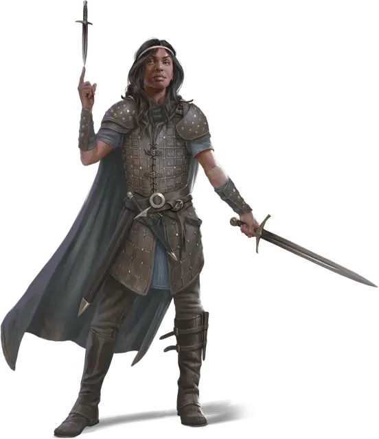

Молливер
Molliver
Средний Гуманоид (Человек), хаотично-добрый, именной НИП

Класс Доспеха 15 (кожаный доспех +1)
Хиты 60 (8к8 + 24)
Скорость 30 футов
| мод | спас | ||
|---|---|---|---|
| СИЛ | 9 | −1 | −1 |
| ЛОВ | 17 | +3 | +5 |
| ТЕЛ | 16 | +3 | +3 |
| мод | спас | ||
|---|---|---|---|
| ИНТ | 10 | +0 | +2 |
| МДР | 9 | −1 | −1 |
| ХАР | 16 | +3 | +3 |
Навыки Акробатика +7, Ловкость рук +7, Скрытность +7
Чувства пассивное Восприятие 9
Языки Общий
Опасность 3 (700 опыта)
Бонус мастерства +2
Особенности
Особое снаряжение. Молливер имеет кожаный доспех +1 [armor +1] и сапоги левитации [boots of levitation].
Увёртливость. Если Молливер в дееспособности и подвергается эффекту, который позволяет совершить спасбросок Ловкости и получить только половину урона, то вместо этого Молливер не получает урона при успешном спасброске и получает только половину при провале.
Действия
Мультиатака. Молливер совершает две атаки кинжалом или две атаки коротким мечом, или по одной из них.
Кинжал. . Рукопашная или дальнобойная атака оружием: +5 к попаданию, досягаемость 5 футов или дистанция 20/60 футов, одна цель. Попадание: 5 (1к4 + 3) колющего урона. Атака наносит дополнительно 7 (2к6) колющего урона, если бросок атаки совершался с преимуществом или если цель находится в пределах 5 футов от союзников атакующего.
Короткий меч. Рукопашная атака оружием: +5 к попаданию, досягаемость 5 футов, одно существо. Попадание: 6 (1к6 + 3) колющего урона.Атака наносит дополнительно 7 (2к6) колющего урона, если бросок атаки совершался с преимуществом или если цель находится в пределах 5 футов от союзников атакующего.
Левитация. Молливер может накладывать левитацию [levitate] (только на себя), пока носит свои сапоги левитации [boots of levitation].
Реакции
Невероятное уклонение. Когда нападающий, которого Молливер может видеть, попадает по этому существу атакой, оно может реакцией уменьшить вдвое урон, причиняемый им этой атакой.
Описание
Молливер — вор, который отдаёт большую часть того, что крадёт, обездоленным, отбирая для собственного использования только несколько предметов. Опасность не имеет особого значения, если можно увидеть торжество справедливости над тиранией и неравенством.
Молливер навлекает на себя неприятности, не продумывая последствия своих действий и рассчитывая на то, что друзья выручат, если вдруг попадёт впросак. На кончике языка всегда вертится дружеская насмешка или едкое замечание, и бесцеремонное обращение не всегда устраивает более осторожных товарищей.